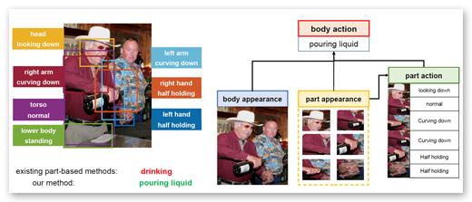
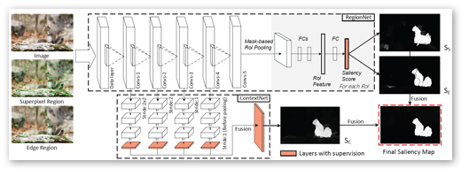
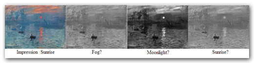
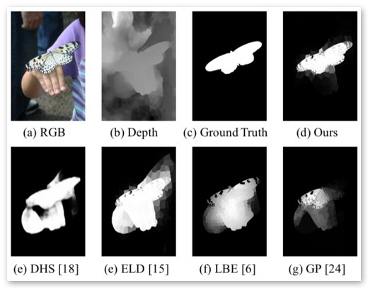
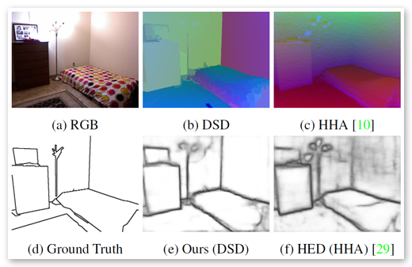
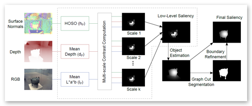
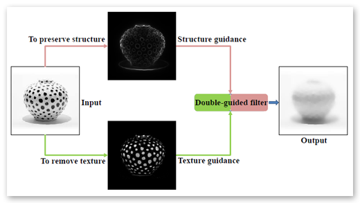
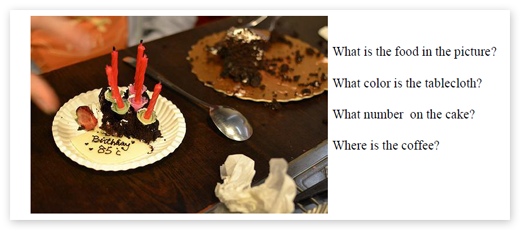

Perception Based Vision
Perceptual based vision aiming to model and understanding human perception. And later propose computer vision and machine learning algorithms which incorporates such understanding. Specifically, I have been working on the topics: Prothetic vision, decolourization, saliency and manifold learning.
Single Image Action Recognition using Semantic Body Part Actions
Appeared in ICCV 2017
Zhichen Zhao, Huimin Ma, Shaodi You

In this paper, we propose a novel single image action
recognition algorithm based on the idea of semantic part
actions. Unlike existing part-based methods, we argue that
there exists a mid-level semantic, the semantic part action;
and human action is a combination of semantic part actions
and context cues. In detail, we divide human body into
seven parts: head, torso, arms, hands and lower body. For
each of them, we define a few semantic part actions (e.g.
head: laughing). Finally, we exploit these part actions to
infer the entire body action (e.g. applauding). To make the
proposed idea practical, we propose a deep network-based
framework which consists of two subnetworks, one for part
localization and the other for action prediction. The action
prediction network jointly learns part-level and body-level
action semantics and combines them for the final decision.
Extensive experiments demonstrate our proposal on semantic
part actions as elements for entire body action. Our
method reaches mAP of 93.9% and 91.2% on PASCAL VOC
2012 and Stanford-40, which outperforms the state-of-theart
by 2.3% and 8.6%.
Edge Preserving and Multi-Scale Contextual Neural Network for Salient Object Detection
Appeared in TIP 2017
Xiang Wang, Huimin Ma, Shaodi You and Xiaozhi Chen

We propose a novel edge preserving
and multi-scale contextual neural network for salient object
detection. The proposed framework is aiming to address two
limits of the existing CNN based methods. First, region-based
CNN methods lack sufficient context to accurately locate salient
object since they deal with each region independently. Second,
pixel-based CNN methods suffer from blurry boundaries due
to the presence of convolutional and pooling layers. Motivated
by these, we first propose an end-to-end edge-preserved neural
network based on Fast R-CNN framework (named RegionNet) to
efficiently generate saliency map with sharp object boundaries.
Later, to further improve it, multi-scale spatial context is attached
to RegionNet to consider the relationship between regions and the
global scenes. Furthermore, our method can be generally applied
to RGB-D saliency detection by depth refinement. The proposed
framework achieves both clear detection boundary and multiscale
contextual robustness simultaneously for the first time, and
thus achieves an optimized performance. Experiments on six
RGB and two RGB-D benchmark datasets demonstrate that the
proposed method achieves state-of-the-art performance.
pdf (4.9MB)
Local Background Enclosure for RGB-D Salient Object Detection
Appeared in CVPR 2016, Spotlight presentation
David Fung, Nick Barnes, Shaodi You, Chris McCarthy,

Recent work in salient object detection has considered the incorporation of depth cues from RGB-D images. In most cases, absolute depth, or depth contrast is used as the main feature. However, regions of high contrast in background regions cause false positives for such methods, as the background frequently contains regions that are highly variable in depth. Here, we propose a novel RGB-D saliency feature. Local background enclosure captures the spread of angular directions which are background with respect to the candidate region and the object that it is part of. We show that our feature improves over state-of-the-art RGB-D saliency approaches as well as RGB methods on the RGBD1000 and NJUS2000 datasets.
Perceptually Consistent Color-to-Gray Image Conversion
Shaodi You, Nick Barnes and Janine Walker

We propose a color to grayscale image conversion algorithm (C2G) that aims to preserve the perceptual properties of the color image as much as possible. To this end, we propose measures for two perceptual properties based on contemporary research in vision science: brightness and multi-scale contrast. The brightness measurement is based on the idea that the brightness of a grayscale image will affect the perception of the probability of color information. The color contrast measurement is based on the idea that the contrast of a given pixel to its surroundings can be measured as a linear combination of color contrast at different scales. Based on these measures we propose a graph based optimization framework to balance the brightness and contrast measurements. To solve the optimization, an L1-norm based method is provided which converts color discontinuities to brightness discontinuities. To validate our methods, we evaluate against the existing cadik and Color250 datasets, and against NeoColor, a new dataset that improves over existing C2G datasets. NeoColor contains around 300 images from typical C2G scenarios, including: commercial photograph, printing, books, magazines, masterpiece artworks and computer designed graphics. We show improvements in metrics of performance, and further through a user study, we validate the performance of both the algorithm and the metric.
Learning RGB-D Salient Object Detection using background enclosure, depth contrast, and top-down features
Appeared in ICCV Workshop on Mutual Benefit of Cognitive and Computer Vision, 2017
Riku Shigematsu, David Feng, Shaodi You and Nick Barnes

In human visual saliency, top-down and bottom-up information are ombined as a basis of visual attention. Recently, deep Convolutional Neural etworks (CNN) have demonstrated strong performance on RGB salient object detection, providing an effective mechanism for combining top-down semantic information with low level features. Although depth information has been shown to be important for human perception of salient objects, the use of top-down information and the exploration of CNNs for RGB-D salient object detection remains limited. Here we propose a novel deep CNN architecture for RGB-D salient object detection that utilizes both top-down and bottom-up cues. In order to produce such an architecture, we present novel depth features that capture the ideas of background enclosure, depth contrast and histogram distance in a manner that is suitable for a learned approach. We show improved results compared to state-of-the-art RGB-D salient object detection methods. We also show that the low-level and mid-level depth features both contribute to improvements in results. In particular, the F-Score of our method is 0.848 on RGBD1000, which is 10.7% better than the current best.
Paper (2.1MB)
Webpage
DSD: Depth Structural Descriptor for Edge-Based Assistive Navigation
Appeared in ICCV Workshop on Assistive Computer Vision and Robotics
David Feng, Shaodi You and Nick Barnes

Structural edge detection is the task of finding edges between significant surfaces in a scene. This can underpin many computer vision tasks such as sketch recognition and 3D scene understanding, and is important for conveying scene structure for navigation with assistive vision. Identifying structural edges from a depth image can be challenging because surface structure that differentiates edges is not well represented in this format. We derive a depth input encoding, the Depth Surface Descriptor (DSD), that captures the first order properties of surfaces, allowing for improved classification of surface geometry that corresponds to structural edges. We apply the DSD feature to salient edge detection on RGB-D images using a fully convolutional neural network with deep supervision. We evaluate our method on both a new RGB-D dataset containing prosthetic vision scenarios, and the SUNRGBD dataset, and show that our approach produces improved performance compared to existing methods by 4%.
Paper (10.2MB)
Webpage
HOSO: Histogram Of Surface Orientation for
RGB-D Salient Object Detection
Appeared in The International Conference on Digital Image Computing: Techniques and Applications, DICTA 2017
David Feng, Nick Barnes and Shaodi You

Salient object detection using RGB-D data is an emerging field in computer vision. Salient regions are often characterized by an unusual surface orientation profile with respect to the surroundings. To capture such profile, we introduce the histogram of surface orientation (HOSO) feature to measure surface orientation distribution contrast for RGB-D saliency. We propose a new unified model that integrates surface orientation distribution contrast with depth and color contrast across multiple scales. This model is implemented in a multistage saliency computation approach that performs contrast estimation using a kernel density estimator (KDE), estimates object positions from the low-level saliency map, and finally refines the estimated object positions with a graph cut based approach. Our method is evaluated on two RGB-D salient object detection databases, achieving superior performance to previous state-of-the-art methods.
Paper (6.2MB)
Double-Guided Filtering: Image Smoothing with Structure and Texture Guidance
Appeared in The International Conference on Digital Image Computing: Techniques and Applications, DICTA 2017
Kaiyue Lu, Shaodi You, Nick Barnes

Image smoothing is a fundamental technology which aims to preserve image structure and remove insignificant texture. Balancing the trade-off between preserving structure and suppressing texture, however, is not a trivial task. This is because existing methods rely on only one guidance to infer structure or texture and assume the other is dependent. However, in many cases, textures are composed of repetitive structures and difficult to be distinguished by only one guidance. In this paper, we aim to better solve the trade-off by applying two independent guidances for structure and texture. Specifically, we adopt semantic edge detection as structure guidance, and texture decomposition as texture guidance. Based on this, we propose a kernel-based image smoothing method called the double-guided filter (DGF). In the paper, for the first time, we introduce the concept of texture guidance, and DGF, the first kernel-based method that leverages structure and texture guidance at the same time to be both 'structure-aware' and 'texture-aware'. We present a number of experiments to show the effectiveness of the proposed filter.
Paper (3.8 MB)
Manifold Topological Multi-Resolution Analysis Method
Appeared in Pattern Recognition
Shaodi You and Huimin Ma

In this paper, two significant weaknesses of locally linear embedding (LLE) applied to computer vision are addressed: "intrinsic dimension" and "eigenvector meanings". "Topological embedding" and "multi-resolution nonlinearity capture" are introduced based on mathematical analysis of topological manifolds and LLE. The manifold topological analysis (MTA) method is described and is based on "topological embedding". MTA is a more robust method to determine the "intrinsic dimension" of a manifold with typical topology, which is important for tracking and perception understanding. The manifold multi-resolution analysis (MMA) method is based on "multi-resolution nonlinearity capture". MMA defines LLE eigenvectors as features for pattern recognition and dimension reduction. Both MTA and MMA are proved mathematically, and several examples are provided. Applications in 3D object recognition and 3D object viewpoint space partitioning are also described.
Paper (3.8MB)
Automatic Generation of Grounded Visual Questions
Appeared in IJCAI 2017
Shijie Zhang, Lizhen Qu, Shaodi You, Zhenglu Yang and Jiawan Zhang

In this paper, we propose the first model to be able to generate diverse visually grounded questions given the same image. Visual question generation is an emerging topic which links textual questions with visual input. To the best of our knowledge, it lacks automatic methods to generate various and reasonable questions for the same visual input. So far, almost all the textual questions are generated manually, as well as the corresponding answers. To this end, we propose a system that automatically generates visually grounded questions. First, visual input is analyzed with deep caption model. Second, the captions along with VGG-16 features are used as input for our proposed question generator to generate visually grounded questions. Finally, to enable generating of versatile questions, a question type selection module is provided which selects reasonable question types and provide them as parameters for question generation. This is done using a hybrid LSTM with both visual and answer input. Our system is trained using VQA and Visual7W dataset and shows reasonable results on automatically generating of new visual questions. We also propose a quantitative metric for automatic evaluation of the question quality.
Paper (1.4 MB)
A solution for efficient viewpoint space partition in 3D object recognition
Oral presentation in ICIG2009
Xiao Yu, Huimin Ma, Shaodi You and Ze Yuan

Viewpoint Space Partition based on Aspect Graph is one of the core techniques of 3D object recognition. Projection images obtained from critical viewpoint following this approach can efficiently provide topological information of an object. Computational complexity has been a huge challenge for obtaining the representation viewpoints used in 3D recognition. In this paper, we discuss inefficiency of calculation due to redundant nonexistent visual events; propose a systematic criterion for edge selection involved in EEE events. Pruning algorithm based on concave-convex property is demonstrated. We further introduce intersect relation into our pruning algorithm. These two methods not only enable the calculation of EEE events, but also can be implemented before viewpoint calculation, hence realizes view-independent pruning algorithm. Finally, analysis on simple representative models supports the effectiveness of our methods. Further investigations on Princeton Models, including airplane, automobile, etc, show a two orders of magnitude reduction in the number of EEE events on average.
Paper (0.5MB)